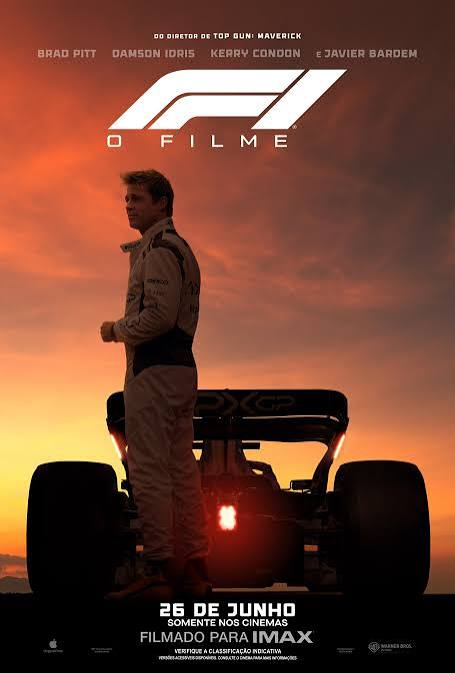

Esporte/Ação/Drama
Fórmula 1
O filme F1 acompanha Sonny Hayes, um ex-piloto dos anos 1990 que retorna às pistas após trinta anos para salvar uma escuderia fictícia em dificuldades e ser mentor de um jovem novato.
Lançamento: 30/08